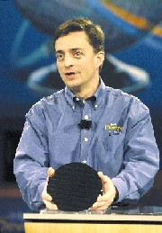
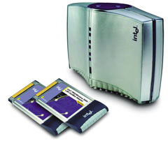
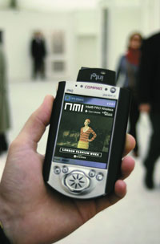

Андрей Борзенко
Второй европейский форум Intel (http://www.intel.com) для разработчиков (Intel Developer Forum, IDF), одно из крупнейших отраслевых событий года в странах Старого Света, был посвящен коммуникационным технологиям и прошел под девизом Computing in Communications. Тенденции развития мировой экономики и техники создают колоссальные возможности для новых достижений и успеха в бизнесе в этом сегменте рынка. В прошлом году, когда многие ведущие компании отрасли пошли на сокращение затрат на научно-исследовательские и проектно-конструкторские разработки, соответствующие ассигнования Intel только в коммуникационной сфере составили 1,2 млрд долл. В частности, весьма значительные капиталовложения в разработку новой производственной технологии позволят корпорации уже к следующему году перейти на выпуск ряда коммуникационных средств с соблюдением технологических норм 0,09 мкм, более чем на год опередив ближайших конкурентов.
В работе IDF приняли участие более тысячи разработчиков аппаратного и программного обеспечения. В программу форума вошли разнообразные семинары и презентации, а также многочисленные выставки и демонстрации передовой продукции, технологий и инициатив. Как обычно, на это мероприятие были приглашены ведущие журналисты из многих стран Европы, которые ознакомились с новыми технологиями, получили информацию о новых стратегических альянсах и планах отраслевых лидеров на будущее. Руководители Intel представили магистральные тенденции развития серверных, беспроводных и мобильных технологий.
В своем ключевом докладе главный директор корпорации Intel по технологиям Пэт Гелсингер (Pat Gelsinger) привел конкретные примеры расширения и углубления сферы действия знаменитого закона Мура, который остается основным законом развития индустрии высоких технологий с момента его открытия в 1965 г. Г-н Гелсингер пояснил, что Intel стремится распространить закон Мура на сферу коммуникаций, поскольку предусматривает высокие темпы разработки и внедрения новаций одновременно со снижением себестоимости продукции. В своем выступлении докладчик остановился и на научно-исследовательской и проектно-конструкторской программе Radio Free Intel, призванной содействовать широкому распространению беспроводных коммуникационных средств в масштабе всей отрасли за счет оснащения полупроводниковой продукции Intel возможностями беспроводной передачи данных.
|  | Выступает главный директор Intel по технологиям Пэт Гелсингер.
|
Были продемонстрированы конкретные примеры использования закона Мура в проектно-конструкторских разработках корпорации в рамках программы Radio Free Intel. Так, полупроводниковые радиоустройства с применением микроэлектронных механических систем MEMS (Micro Electronic Mechanical Systems), будучи оснащены программными средствами интеллектуального роуминга, способны обеспечить широкое распространение "постоянно подключенного" коммуникационного оборудования, а также беспроводные самоорганизующиеся сенсорные сетевые средства. Последние, разработанные на основе закона Мура и результатов исследований в области сетевых коммуникаций, смогут обеспечить беспроводное подключение тысяч сверхкомпактных встроенных чувствительных элементов. Внедрение полупроводниковых средств оптической коммутации, объединяющих в одном кристалле функции цифровых логических схем и полупроводниковых оптоэлектронных устройств, дает возможность на два порядка снизить стоимость организации оптоволоконных каналов, что, безусловно, будет способствовать самому широкому распространению высокоскоростных коммуникаций.
Исследования и сотрудничество
Сегодня свыше 7 тыс. ученых и инженеров-технологов работают более чем в 75 лабораториях Intel по всему миру, при этом каждый седьмой из них трудится в Центрах Intel в Европе и Израиле. Intel уделяет огромное внимание этой сфере, ежегодно увеличивая инвестиции в НИОКР (в 2002 г. объем финансирования исследовательских работ достигнет 4,1 млрд долл. - на 300 млн долл. больше, чем в прошлом году).
Большой интерес на форуме вызвало выступление содиректора нижегородского Центра Intel Олега Сютина. Он, в частности, отметил, что за последний год специалисты Центра подали заявки на двенадцать патентов на изобретения в области технологий компьютерного зрения и распознавания объектов, цифровых вычислительных методов и развития протоколов беспроводной передачи данных в стандартах 802.11х. Стоит отметить, что российский Центр Intel по разработке ПО в Нижнем Новгороде - один из крупнейших в Старом Свете и первый, открытый корпорацией в Восточной Европе (еще весной 2000 г.). В Центре работает в общей сложности более 150 сотрудников, специализирующихся в таких направлениях развития ПО, как компьютерная графика, мультимедиа, байесовские сети, компиляторы, средства разработки и оптимизации. Сотрудники нижегородской лаборатории активно участвуют в совершенствовании высокопроизводительной программной базы Intel, которая представляет собой собрание математических библиотек программирования в таких областях, как цифровая обработка сигналов, распознавание речи, обработка изображений, линейная алгебра, а также в создании мощного графического процессора для трехмерных объектов и комплекта инструментальных средств разработки ПО SDK (Software Development Kit) для процессоров Pentium 4 и Itanium. Ведущиеся в нижегородском Центре работы в области компьютерного зрения пользуются растущим признанием со стороны специалистов по науке и технике, в том числе в США. Речь идет о созданном нашими исследователями уникальном инструментарии передачи и обработки cтереоизображений, к которому получили публичный доступ специалисты в области науки и техники, а также творческие работники во всем мире.
Сегодня специалисты Центра вплотную занимаются программными технологиями, которые руководители корпорации называют в качестве ключевых технологий будущего; с точки зрения Intel они имеют высший приоритет. Прежде всего это развитие многопроцессорных и многопотоковых систем программирования; тесная интеграция компьютерных и коммуникационных технологий (в том числе программная реализация алгоритмов для беспроводных технологий); дальнейшее развитие традиционных полупроводниковых технологий и интеграция кремниевых технологий с оптоэлектронными устройствами.
На форуме было объявлено, что в рамках расширения проектно-исследовательской деятельности на европейском континенте Intel заключила соглашение с Политехническим университетом Каталонии в Барселоне (UPC), по условиям которого университет берет на себя руководство от имени Intel деятельностью подразделения корпорации под названием Intel Labs Barcelona (ILB). Высококвалифицированные специалисты займутся разработкой технологий для процессоров семейства Itanium, а также кристаллов Pentium 4 по таким основным направлениям, как дальнейшее наращивание производительности, снижение энергопотребления и продление срока службы автономных источников питания.
Корпорации IBM (http://www.ibm.com) и Intel анонсировали совместную программу, цель которой - ускорение разработки беспроводных приложений и служб. Инициатива будет реализовываться на территории всех европейских стран и предполагает разработку беспроводных решений, позволяющих коммерческим предприятиям быстро окупать инвестиции в системы для электронного бизнеса. Этот проект продолжает сотрудничество IBM и Intel в области предоставления решений на основе открытых стандартов разработчикам беспроводных аппаратных средств и ПО. Для реализации проекта будут задействованы ресурсы партнерского центра инноваций IBM в области электронного бизнеса в Хельсинки (Финляндия) и центра изучения беспроводных технологий Intel в Стокгольме (Швеция). В рамках этой программы независимые поставщики ПО смогут разрабатывать, продвигать на рынок и внедрять новые высокопроизводительные беспроводные решения на основе платформы IBM WebSphere и архитектуры Intel, включая серверы на базе процессоров Itanium и Xeon, клиентские системы на базе процессоров семейства Pentium 4, а также архитектуры Intel Personal Internet Client Architecture (беспроводные мобильные клиентские устройства). Intel уже открыла центры изучения беспроводных технологий в Стокгольме (Швеция), Цукубе (Япония) и Пекине (Китай). Главная задача этих центров - сотрудничество и совместная разработка новых технологий с лидерами в сфере беспроводных коммуникаций.
Кроме того, Fujitsu Siemens Computers (http://www.fujitsu-siemens.com) и Intel объявили об объединении усилий с тем, чтобы обеспечить непрерывную работоспособность телекоммуникационных и других серверов на базе архитектуры Intel, повысив коэффициент готовности критически важных приложений делового назначения, в том числе класса телекоммуникационной компании (до уровня 99,999% и более), с помощью технологии, основанной на открытых стандартах. Создание новой экономичной платформы позволит изготовителям телекоммуникационного оборудования и независимым поставщикам ПО ускорить сроки разработки и вывода своих решений на рынок.
Двустороннее соглашение подразумевает, что связующее ПО Resilient Telco Platform (RTP), разработанное компанией Fujitsu Siemens Computers, сможет работать на серверах уровня телекоммуникационной компании на базе архитектуры Intel под управлением ОС Linux. Такие стандартные платформы модульной компоновки будут создаваться с применением готовых серверов Primergy под управлением Linux, усовершенствованных для работы в среде уровня телекоммуникационной компании, а также стандартных технологий кластеризации (например, PrimeCluster) и кластерных баз данных. К этой основе платформа RTP добавит дополнительные функции, обеспечивающие непрерывную работоспособность отказоустойчивых приложений даже при аппаратных или программных сбоях.
Благодаря последовательному применению стандартных компонентов системы на основе платформы RTP под управлением ОС Linux, оптимизированной для нужд телекоммуникационной компании, отличаются относительно низкой совокупной стоимостью владения (TCO), а также невысокой стоимостью сборки. Fujitsu Siemens Computers и Intel намерены осуществлять поддержку новой платформы по всему миру. Оба партнера принимают активное участие в деятельности Форума по разработке стандартов высокой работоспособности (Service Availability Forum).
Инициативы и решения
Значительным событием форума стало представление предлагаемой Intel отраслевой концепции стандартных модульных серверов и оборудования для систем связи. Эта концепция позволит поставщикам сетевого оборудования снизить затраты на разработку и ускорить создание готовой продукции, а также расширит возможности проектирования основанных на стандартах высокоинтегрированных коммуникационных серверов и решений. Как известно, экономический спад в телекоммуникационной отрасли и бурное развитие Интернета ускорили необходимость перехода от закрытых малосерийных фирменных решений на основанные на стандартах модульные коммуникационные серверы и оборудование.
Применение стандартных модульных коммуникационных серверов и оборудования позволит поставщикам сетевых устройств создавать решения с высокой готовностью в более сжатые сроки и с меньшими затратами. Кроме того, такой подход даст им возможность концентрироваться на более доходных направлениях деятельности - таких, как разработка приложений и сетевая системная интеграция. Новый класс серверов и оборудования базируется на стандартных аппаратных средствах, ОС и интерфейсах программирования для приложений высокой готовности.
В настоящее время Intel вместе с более чем 100 компаниями работает над стандартизацией аппаратных средств, ОС и ПО, которые позволят поставщикам коммуникационного оборудования начать применять на практике такие серверы и устройства. Примером может служить сотрудничество корпорации Intel с комитетом PCI Industrial Manufacturers Group (PICMG) в разработке спецификации Advanced Telecom Computing Architecture (AdvancedTCA) - важнейшей отраслевой инициативы в области стандартизации высокоинтегрированных серверов.
Сегодня AdvancedTCA - это отраслевой стандарт форм-факторов плат и корпусов, оптимизированный для коммуникационных приложений и призванный удовлетворять требования к масштабированию коммуникационных систем вплоть до 2010 г. В частности, спецификация предусматривает пропускную способность внутренней соединительной шины корпуса до 4,5 Тбит/с, многопротокольные интерфейсы модулей вплоть до OC-768, поддержку оперативной памяти свыше 8 Гбайт на плату, повышенную готовность системы и запас ресурсов для дальнейшего наращивания производительности.
На форуме было также объявлено о разработке "Руководства по проектированию модульных платформ", которое позволит разработчикам аппаратных средств и ПО для телекоммуникационной отрасли быстро создавать основанные на стандартах коммуникационные модули нового поколения на основе спецификации AdvancedTCA.
Представляя концепцию основанных на стандартах модульных коммуникационных платформ, Intel также помогает поставщикам сетевого оборудования создавать продукцию на основе ныне действующего отраслевого стандарта - PICMG 2.16. В частности, корпорация разработала серию коммуникационных высокоинтегрированных модулей, которые помогут поставщикам сетевого оборудования ускорить разработку коммуникационных решений на базе PICMG 2.16. Данная серия включает в себя плату NetStructure ZT 5524 System Master Processor Board, платформу NetStructure ZT 5088 12U General Purpose Packet Switched Platform, а также платформу NetStructure ZT 5085 12U General Purpose Packet Switched Platform. Новая серия с высокой готовностью построена на базе процессоров Pentium III и отличается малым энергопотреблением, низким тепловыделением и аппаратным резервированием, необходимым для провайдеров коммуникационных услуг. Новые высокоинтегрированные модули специально разработаны для коммуникационных приложений - серверов телекоммуникационных провайдеров, серверов систем широкополосного доступа, телекоммуникационных коммутаторов, контроллеров базовых станций мобильной связи и систем хранения данных.
На форуме было также объявлено о начале продаж в нескольких европейских странах семейства продукции для беспроводных сетей Intel PRO/Wireless 5000, в состав которого входят точки доступа в сеть (или базовые станции) и адаптеры для портативных ПК. Intel также объявила о начале продажи упрощенного базового набора оборудования на основе стандарта 802.11a, включающего одну точку доступа и два адаптера для портативных ПК. Адаптеры формата PCI и мини-PCI для настольных ПК появятся в продаже в III квартале текущего года.
|  | Точка доступа Intel PRO/Wireless 5000 и адаптеры.
|
Приобрести эту продукцию в настоящее время можно в тех европейских странах, где разрешено использование оборудования стандарта 802.11a на частоте 5,2 ГГц, в частности, во Франции, Великобритании, Нидерландах, Бельгии, Дании, Швеции. По прогнозам Intel, вскоре к ним присоединятся и другие страны.
Помимо базового варианта, поддерживающего только стандарт 802.11a, точка доступа Intel PRO/Wireless 5000 будет продаваться и в другом исполнении, в том числе с возможностью модернизации до 802.11b, а также с поддержкой одновременно 802.11a и 802.11b. Напомним, что оборудование, поддерживающее стандарт 802.11a, позволяет передавать данные со скоростью до 54 Мбит/с, что в пять раз быстрее по сравнению с 11 Мбит/с - пределом для стандарта 802.11b. За счет этого технология 802.11a обеспечивает такую производительность сетевых каналов, которой вполне достаточно для эффективной одновременной работы множества сетевых приложений, например, средств проведения звуковых и видеоконференций, анализа данных и передачи файлов большого объема. Во-вторых, оборудование стандарта 802.11a работает на свободной частоте 5,2 ГГц, что исключает вероятность создания помех работе других систем. В-третьих, оборудование стандарта 802.11a имеет восемь неперекрывающихся каналов, тогда как устройства стандарта 802.11b - только три. Благодаря наличию восьми неперекрывающихся каналов пользователи получают совокупную пропускную способность сети в 432 Мбит/с, тогда как стандарт 802.11b способен обеспечить не более 33 Мбит/с.
|  | КПК с беспроводной связью.
|
Точка доступа Intel PRO/Wireless 2000 предназначена для обслуживания клиентских систем по стандарту 802.11b с возможностью модернизации и обслуживания клиентских систем по стандарту 802.11a. Последняя особенность делает эту точку доступа особенно привлекательным объектом инвестиций в тех странах, где использование оборудования стандарта 802.11a пока не разрешено. Intel PRO/Wireless 2000 появится в продаже во всех европейских странах к концу июня. Использование двухдиапазонных точек доступа позволит организациям сохранить инвестиции в приобретенное ранее Wi-Fi-оборудование, работающее на скорости 11 Мбит/с (стандарта IEEE 802.11b), но в то же время существенно облегчит переход на оборудование класса Wi-Fi5 (стандарт IEEE 802.11a), обеспечивающее скорость передачи данных до 54 Мбит/с, более высокую пропускную способность сетевых каналов и более чистый эфир - все, что необходимо для широкомасштабного внедрения беспроводных локальных сетей.
Кроме того, корпорация Intel недавно продемонстрировала первый экспериментальный образец набора микросхем для двухдиапазонных беспроводных локальных сетей, способного работать в качестве клиентской системы как стандарта Wi-Fi, так и стандарта Wi-Fi5. Набор микросхем для двухдиапазонных беспроводных локальных сетей Intel совместим с обоими стандартами 802.11b и 802.11a и поступит в продажу в этом году. Он позволит снизить себестоимость коммуникационных устройств, поддерживает все современные стандарты защиты ЛВС, повышает производительность сетевого оборудования, а также обладает улучшенными характеристиками энергопотребления. Предполагается, что эта новинка сможет ускорить прямую интеграцию беспроводных сетевых вычислений в настольные и портативные ПК.